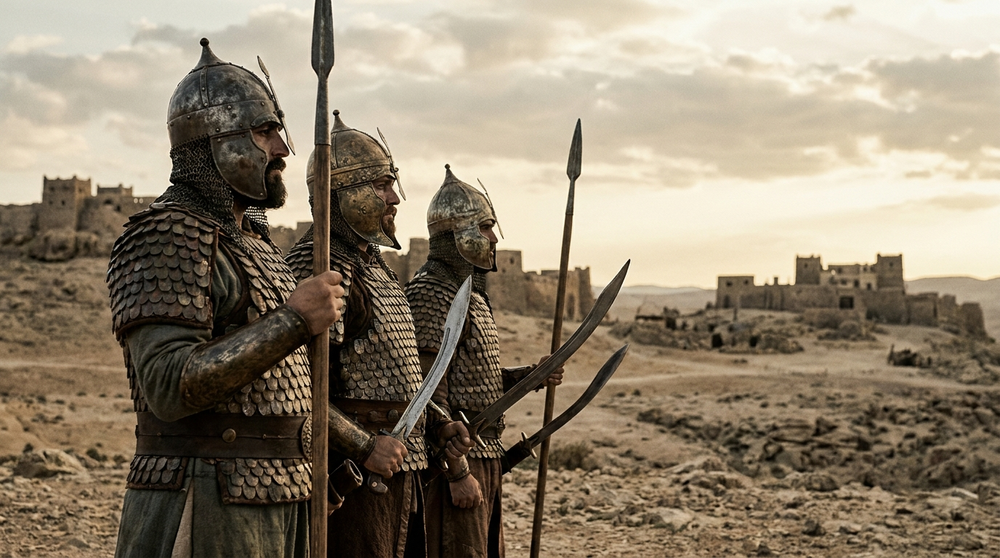

Os Arqui-inimigos de Israel e a Era do Ferro
Se você perguntasse a qualquer israelita nos tempos dos Juízes ou do início da monarquia quem era o seu maior pesadelo, a resposta seria imediata e unânime: os filisteus. Eles não eram apenas mais uma tribo local de Canaã; eles eram uma superpotência militar implacável, tecnologicamente superior, e os vilões de algumas das histórias mais famosas da Bíblia, incluindo a saga de Sansão e a épica batalha entre Davi e o gigante Golias.
Compreender quem eram os filisteus — sua origem misteriosa, seu monopólio sobre o armamento de guerra e a sua religião complexa — lança uma luz impressionante sobre os textos sagrados. Mostra-nos por que Israel estava sempre à beira da aniquilação e por que a intervenção de Deus era a única explicação lógica para a sobrevivência da nação hebraica durante séculos de embates.
Índice do Estudo:
- 1. A Origem Histórica: Os "Povos do Mar" e a Pentápolis
- 2. A Descendência: A Árvore Genealógica dos Filisteus
- 3. A Vantagem Tecnológica: O Monopólio do Ferro
- 4. A Religião Filisteia: O Culto a Dagom e Belzebu
- 5. Os Grandes Confrontos Bíblicos (Sansão, Saul e Davi)
- 6. O Fim dos Filisteus e a Origem do nome "Palestina"
- 7. Tabela de Resumo e Aplicação Prática
1. A Origem Histórica: Os "Povos do Mar" e a Pentápolis
Diferente dos amorreus ou jebuseus, os filisteus não eram nativos da região de Canaã. Eles eram invasores estrangeiros. Historicamente e arqueologicamente, os filisteus faziam parte de uma grande coalizão migratória conhecida como os "Povos do Mar". Devido a colapsos de impérios e escassez de alimentos na região do Mar Egeu (perto da Grécia moderna), esses povos navegaram em direção ao Egito e Canaã por volta de 1200 a.C.
A própria Bíblia confirma essa origem estrangeira, ligando os filisteus a "Caftor", que a maioria dos historiadores identifica como a ilha de Creta ou as costas do Mar Egeu.
"Não tirei eu Israel da terra do Egito, e os filisteus de Caftor, e os arameus de Quir?"
— Amós 9:7
Ao tentarem invadir o Egito, foram repelidos pelo Faraó Ramsés III. Sem poderem se estabelecer nas ricas margens do Nilo, eles se assentaram na planície costeira sudoeste de Canaã (onde hoje fica a Faixa de Gaza). Ali, eles fundaram a famosa Pentápolis Filisteia, uma poderosa confederação de cinco grandes cidades-estado muradas, cada uma governada por um líder chamado "serém" (ou príncipe):
- Gaza: O principal centro comercial e porto no sul.
- Asquelom: Outra grande cidade costeira e potência naval.
- Asdode: O grande centro religioso, lar do templo principal de Dagom.
- Ecrom: Conhecida pela sua indústria de azeite e pelo culto a Baal-Zebube.
- Gate: Uma cidade no interior, perto das fronteiras de Judá, famosa por ser a terra natal do gigante Golias.
2. A Descendência: A Árvore Genealógica dos Filisteus
Ao contrário do que muitos pensam, os filisteus não eram parentes dos canaaneus nativos, embora habitassem a mesma região e frequentemente se aliassem a eles contra Israel. A Bíblia traça a genealogia deles de forma muito precisa no capítulo 10 de Gênesis (a famosa Tabela das Nações). Eles descendem de Mizraim, o patriarca que deu origem à nação do Egito.
- Noé gerou a Sem, Jafé e Cam após o dilúvio.
- Cam gerou a Cuche, Mizraim (patriarca dos egípcios), Pute e Canaã.
- Mizraim gerou várias tribos costeiras e navais, incluindo os Casluins e os Caftorins.
- O texto bíblico é exato em apontar a origem: "...de Casluim (donde saíram os filisteus) e Caftorim." (Gênesis 10:14).
- Contexto Histórico: Geneticamente eles eram ligados aos egípcios antigos (Mizraim), mas migraram e dominaram a ilha de Caftor (Creta). Séculos mais tarde, retornaram ao continente como os temíveis "Povos do Mar", invadindo Canaã.
3. A Vantagem Tecnológica: O Monopólio do Ferro
Por que Israel sofria tanto nas mãos dos filisteus? A resposta não estava apenas no tamanho de seus guerreiros (como Golias), mas na tecnologia. Enquanto as tribos de Israel estavam presas na "Idade do Bronze", os filisteus haviam trazido do mundo egeu e hitita o conhecimento da metalurgia avançada: eles haviam entrado na Idade do Ferro.
Eles guardavam o segredo de como forjar o ferro a sete chaves. Isso lhes dava uma vantagem militar avassaladora. Suas espadas, pontas de lança, escudos e carros de guerra eram mais fortes, afiados e duráveis do que o bronze frágil dos israelitas. A Bíblia relata um fato humilhante sobre essa dependência tecnológica no início do reinado de Saul:
"Em toda a terra de Israel não se encontrava um ferreiro... Todos os israelitas tinham que descer aos filisteus para afiar as relhas dos seus arados, as suas enxadas, os seus machados e as suas foices... No dia da batalha, nenhum dos soldados de Saul e Jônatas tinha espada ou lança nas mãos; apenas Saul e seu filho Jônatas as tinham."
— 1 Samuel 13:19-22
Imagine o desespero psicológico: um exército inteiro de camponeses israelitas armados com pedaços de pau, estilingues e ferramentas agrícolas de bronze, enfrentando tropas profissionais filisteias cobertas de armaduras de escamas e empunhando espadas de ferro reluzentes.
4. A Religião Filisteia: O Culto a Dagom e Belzebu
Apesar de virem da Grécia/Creta, os filisteus rapidamente assimilaram as divindades cananeias locais, mas lhes deram seu próprio toque cultural e arquitetônico monumental.
O deus principal e nacional dos filisteus era Dagom. Originalmente uma antiga divindade semítica ligada aos cereais e à agricultura, ele foi adotado pelos filisteus como um deus do clima e, segundo algumas tradições, era representado com a parte superior do corpo de um homem e a parte inferior de um peixe (ideal para um povo de origem marítima).
Um dos relatos bíblicos mais fascinantes sobre Dagom acontece em 1 Samuel 5. Após os filisteus capturarem a Arca da Aliança, eles a colocam no templo de Dagom em Asdode como um troféu de guerra. No dia seguinte, a estátua de Dagom amanhece caída de bruços diante da Arca do Senhor. Eles o levantam, mas na manhã seguinte, Dagom está caído novamente, com a cabeça e as mãos quebradas. Foi a forma de Deus mostrar que Sua glória não divide espaço com ídolos forjados pelo homem.
Outro deus infame adorado na cidade filisteia de Ecrom era Baal-Zebube ("Senhor das Moscas" ou "Príncipe da Morada"). Este nome se tornaria tão associado à idolatria perversa que, no Novo Testamento, os fariseus o usam (sob a forma de Belzebu) como um sinônimo para o próprio Satanás ou o "príncipe dos demônios".
5. Os Grandes Confrontos Bíblicos (Sansão, Saul e Davi)
A relação entre Israel e a Filístia foi marcada por quase três séculos de derramamento de sangue ininterrupto. Destacam-se três grandes momentos dessa guerra secular:
A Era dos Juízes e Sansão: O livro de Juízes nos mostra um Israel subjugado. A opressão filisteia era tão severa que eles cobravam altos impostos e roubavam as colheitas. É neste cenário de terror que Deus levanta Sansão. Ao contrário de generais de exércitos, Sansão operava como um guerreiro de guerrilha de um homem só. Com força sobrenatural dada pelo Espírito Santo, ele destruía plantações filisteias e matava milhares, culminando no seu ato final de sacrifício, quando derrubou as colunas do grande templo de Dagom, matando os principais líderes (seréns) da confederação filisteia.
A Tragédia do Rei Saul: O primeiro rei de Israel passou praticamente todo o seu reinado em guerra contínua contra os filisteus. As batalhas eram ferozes. Foi numa dessas campanhas desastrosas no Monte Gilboa que o exército de Israel foi massacrado. Saul e seus filhos (incluindo Jônatas) foram mortos. Os filisteus, em sinal de zombaria, cortaram a cabeça de Saul e penduraram seu corpo nas muralhas da cidade de Bete-Seã.
Davi e o Fim do Domínio: A virada de jogo histórica só ocorreu com Davi. O evento mais icônico foi a derrota do campeão filisteu, o gigante Golias de Gate, no Vale de Elá. Um garoto pastor com uma funda derrotou o auge da tecnologia do ferro filisteu. Quando Davi se tornou rei de todo o Israel, ele desferiu golpes decisivos contra os filisteus, invadindo suas cidades, quebrando o monopólio do ferro e subjugando a Pentápolis permanentemente. Eles nunca mais foram uma ameaça de nível existencial para Israel.
6. O Fim dos Filisteus e a Origem do nome "Palestina"
O que aconteceu com os grandes filisteus? Nos séculos seguintes a Davi, eles perderam sua força e autonomia. Quando o Império Assírio e depois o Império Babilônico invadiram a região, as cidades filisteias foram destruídas, e os sobreviventes foram levados para o exílio.
Diferente dos judeus, que mantiveram sua identidade e religião na Babilônia e retornaram para casa, os filisteus assimilaram a cultura de seus captores, casaram-se com outros povos e desapareceram completamente da história como um grupo étnico distinto. O povo filisteu foi extinto.
No entanto, eles deixaram uma marca permanente no mapa. No ano 135 d.C., após os romanos esmagarem a última revolta judaica, o imperador Adriano decidiu humilhar os judeus apagando o nome da nação de Judá e Israel dos mapas oficiais do império. Para ofender a memória judaica, ele renomeou toda a região com o nome dos piores e mais antigos arqui-inimigos de Israel: os filisteus. Em latim, Philistia virou "Syria Palaestina". É dessa vingança romana que surge a palavra moderna "Palestina".
7. Tabela de Resumo e Aplicação Prática
Para facilitar seus estudos teológicos, confira a tabela com o resumo do império filisteu:
| Aspecto | Detalhe Filisteu | Referência e Contexto Bíblico |
|---|---|---|
| Origem | Descendentes do Egito (Mizraim), viajavam pelas ilhas de Creta. | Gênesis 10:14. Não eram canaaneus nativos da terra. |
| Capitais | A Pentápolis: Gaza, Asquelom, Asdode, Ecrom, Gate. | Josué 13:3. Governadas por 5 príncipes unidos militarmente. |
| Vantagem | Monopólio da metalurgia do Ferro (espadas/carros). | 1 Samuel 13. Israel dependia deles para afiar ferramentas. |
| Religião | Dagom (deus do clima) e Baal-Zebube. | 1 Samuel 5. A Arca derruba Dagom. Templo destruído por Sansão. |
| Figuras | O gigante Golias, a sedutora Dalila, Rei Aquis. | Golias representava a força bruta do ferro que Davi derrotou pela fé. |
💡 Aplicação Prática: O que aprendemos hoje?
Espiritualmente, podemos olhar para os filisteus como um retrato de "obstáculos estruturais" que tentam nos afastar do propósito de Deus. Os filisteus não eram um problema passageiro; eles eram uma presença intimidadora e de longo prazo. Da mesma forma, muitas vezes enfrentamos lutas prolongadas em nossa jornada, sejam fraquezas persistentes, perseguições ou gigantes como "Golias", que se levantam dia após dia para zombar da nossa esperança.
A lição mais poderosa dos tempos dos filisteus é sobre onde depositamos nossa confiança. Israel, liderado por Saul, muitas vezes entrou em pânico porque focou na vantagem terrena e nas espadas de ferro do inimigo. Mas foi Davi, um jovem sem armadura, quem demonstrou a verdadeira vitória cristã: "Tu vens contra mim com espada, com lança e com escudo; eu, porém, vou contra ti em nome do Senhor dos Exércitos" (1 Sm 17:45). Não é a tecnologia militar ou a capacidade humana que garantem a vitória, mas a presença inabalável do Deus Vivo.
🎥 Aprofunde seu estudo
Deseja entender visualmente como era a cultura dos Filisteus, as escavações arqueológicas de suas cidades e como eles se tornaram o maior terror de Israel?
Assista a um documentário/aula detalhada sobre o tema no YouTube.
Voltar aos Estudos:
Apoie este projeto 🌱
Se este estudo de alto nível foi útil para o seu ministério, considere apoiar a manutenção do site.
Chave PIX (Celular):
marcosmontanaria@gmail.com